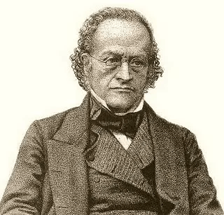
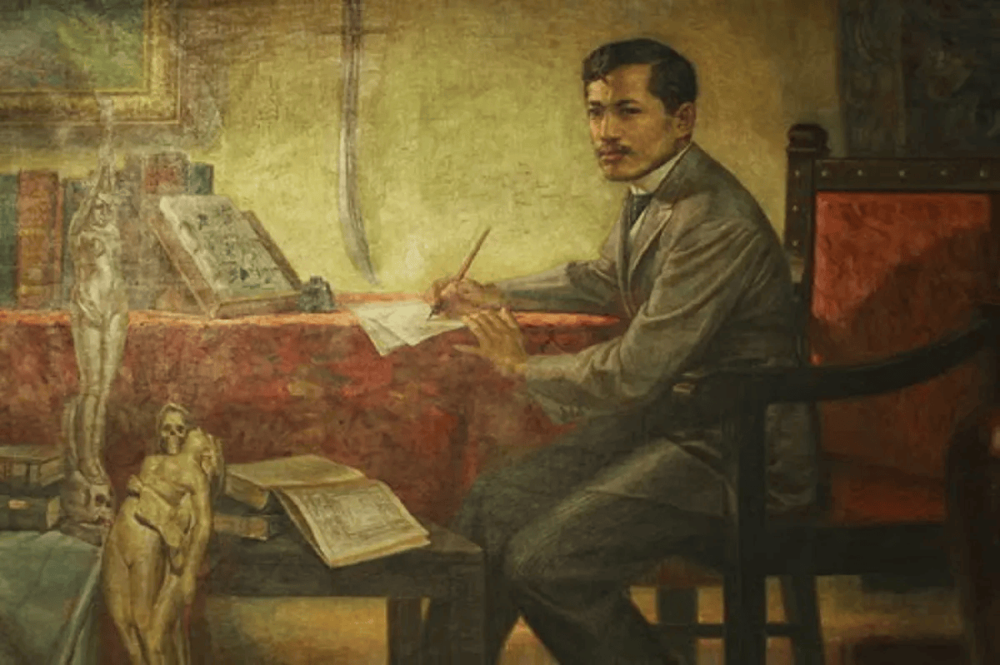
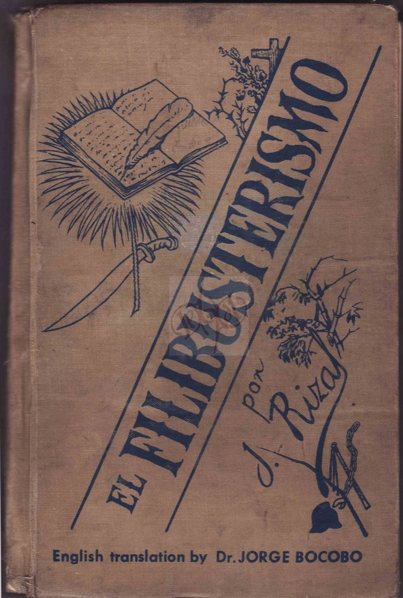

Life Timeline
Birth in Calamba
Rizal grew up in Calamba, a town owned by the Dominicans and named after a native jar. At 15, he wrote Un Recuerdo A Mi Pueblo, recalling childhood memories, family, faith, and nature. His early life included reading the Bible at five, creating art, and being deeply moved by The Story of the Moth. He wrote his first Tagalog poem at eight and a play for a town fiesta.

Early Education
Rizal was first taught by his mother, then by private tutors. He later studied in Biñan under Maestro Justiniano Cruz, where he had classmates like Pedro and Jose Guevara, and learned art from Juancho. He returned to Calamba for Christmas in 1870.
Rizal In Ateneo
Rizal studied under Father Jose Bech and later took Spanish lessons at Santa Isabel College. He excelled in class, won many medals, and graduated with highest honors in Arts. Inspired by Father Sanchez, he also read various books and pursued art and sculpture.

Poetry in Ateneo
Rizal wrote his first poem Mi Primera Inspiracion in 1874 for his mother. He also penned Un Recuerdo a Mi Pueblo for Calamba, and other works on education and religion.
University of Santo Tomas
Rizal studied Philosophy and Letters, then Medicine at UST, while also taking surveying at Ateneo. He won literary prizes and joined a secret student group. He disliked UST due to discrimination and outdated teaching, later reflected in El Filibusterismo.

El Filibusterismo
Rizal published his second novel, "El Filibusterismo" (The Subversive), a darker sequel to "Noli Me Tangere." The novel depicts the continued corruption and abuse in the Philippines under Spanish rule and explores themes of revenge, reform, and revolution. It was dedicated to the three martyred priests: Gomez, Burgos, and Zamora.
"I die without seeing the dawn brighten over my native land. You who have it to see, welcome it and forget not those who have fallen during the night!" — Jose Rizal, Mi Último Adiós (My Last Farewell)
Remarkable Achievements
Literary Works
Authored two influential novels, poetry, essays, and scientific papers that exposed colonial injustices and inspired a national identity.
Medicine
Studied medicine in Madrid and specialized in ophthalmology in Paris and Heidelberg. He performed the first successful cataract surgery in the Philippines.
Renaissance Man
Excelled in various fields including sculpture, painting, drawing, farming, martial arts, and physical sciences.
Personal Life
Relationships
Throughout his life, Rizal had several romantic relationships that influenced his worldview and writings. His most famous relationship was with Josephine Bracken, an Irish woman whom he met during his exile in Dapitan. Though they were unable to marry due to his refusal to return to Catholicism, they lived as husband and wife.
Family
Born to a prosperous family, Rizal was the seventh of eleven children. His parents instilled in him a deep love for education and an appreciation for Filipino culture, despite the predominant Spanish influence. His family later suffered persecution due to his activism.
Hobbies and Interests
Beyond his intellectual pursuits, Rizal enjoyed fencing, target shooting, and physical exercise. He was also known for his talent in creating sculptures and sketches. During his exile in Dapitan, he engaged in agricultural projects, established a school, and practiced medicine.
Discover More About Rizal's Legacy
Explore how Jose Rizal's life and works continue to influence Filipino society and culture today
Explore His Legacy